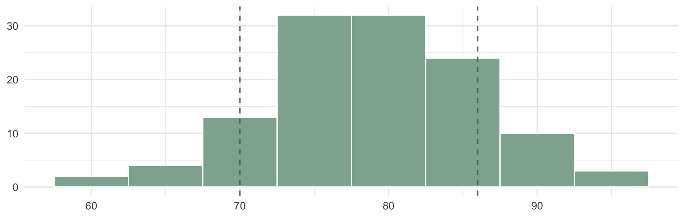

From “Stats Is Everywhere” to “Let’s Actually See It”
Last time: statistics isn’t just math — it’s how you make sense of decisions you already make every day.

- A number by itself is hard to feel — “the average score was 78” doesn’t tell you much on its own
The average was 78. You scored a 67.
Today: choosing and building the right picture for your data.
The ggplot2 Recipe

Every ggplot2 chart follows the same three-ingredient recipe — we’ll come back to this constantly this semester. It’s ggplot2’s implementation of Wilkinson’s “Grammar of Graphics”: any chart can be built from the same small set of parts.
Data
Which tibble/data frame are you plotting?
Aesthetics
aes() — which columns map to x, y, color, etc.?
Geometry
geom_*() — what shape represents your data?
- 1
- Data + aesthetics — the data frame, and which columns map to x/y/color/etc.
- 2
- Geometry — the shape (bars, points, lines…) that represents your mapped data.
We’ll build up from this simple recipe all semester — no need to memorize every option today.